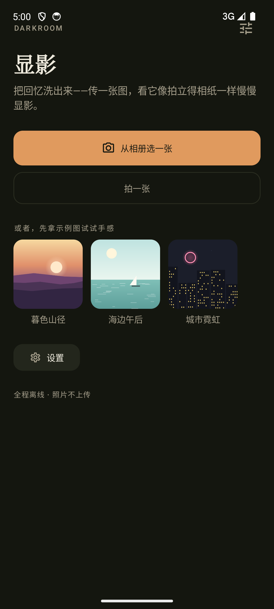
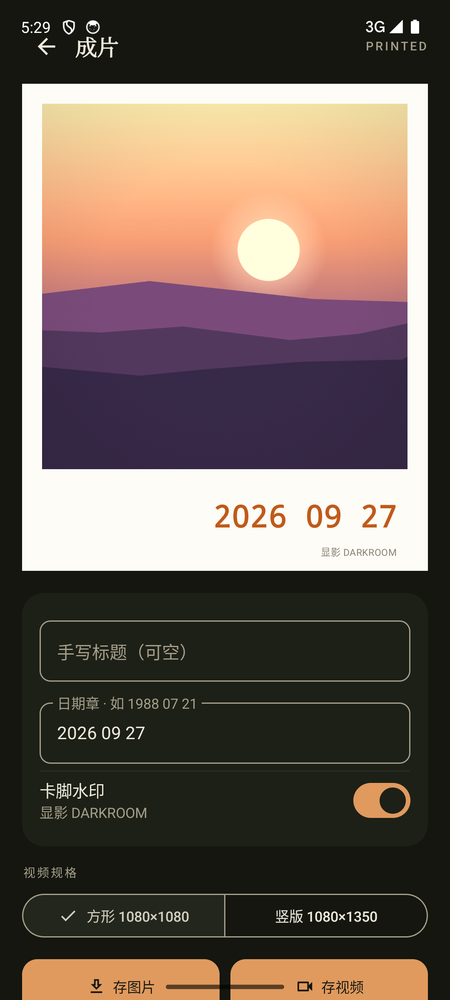
对显影 darkroom 的 4 个页面（选图 / 显影台 / 成片 / 设置）完成实机截图走查与 11 项交互实测：发现 1 个 P0 崩溃（已当场修复并回归），另汇总 5 个 P1、5 个 P2 视觉与体验问题；每主题给出灰盒改版线框，蓝色徽标与右侧要点编号一一对应。
模拟器 1080×2400，四页 + 显影三阶段 / 拖动 / 分享等过程态逐页截图，按根 DESIGN.md §2–§5 逐条对表。
uiautomator 断言 + 传感器注入 + MediaStore 落盘校验；关键结论均给出可复现的操作与读数。
崩溃堆栈、速度档、卡面布局均回溯到具体文件与行号，区分「视觉观感」与「实现事实」。
| # | 问题 | 涉及页面 | 级别 | 修法（对应线框） |
|---|---|---|---|---|
| C1 | 顶行嵌入状态栏：触摸死区 + 视觉顶格（全页缺 statusBars insets） | D1 · D2 · D3 · D4 | P1 | insets 下推页头，44dp 命中区完整落在安全区下（线框 D1①②） |
| C2 | 卡面几何与容器不匹配：W2 溢出白框撞读数、W3 标题×日期重叠 | D2 · D3 | P1 | CardLayout 按可用高度反解 + 签名域互斥（线框 D2①② / D3①） |
| C3 | 速度档运行时不生效（仅标签与导出时间线变化） | D4 | P1 | DevelopSpeed.collect 重建 clock（线框 D4②） |
| C4 | 首屏底部 CTA 裁切、导出进度屏外 | D3 | P1 | 进度条上贴 CTA、按钮行上移入屏（线框 D3②③） |
| C5 | 首屏底部大面积留白（W1/W4 内容止于 60% 高度） | D1 · D4 | P2 | footer / 内容下移贴底或增密（线框 D1③） |
| C6 | 拟物槽口对比度不足、不可见 | D2 | P2 | 槽口描边加深（线框 D2③） |
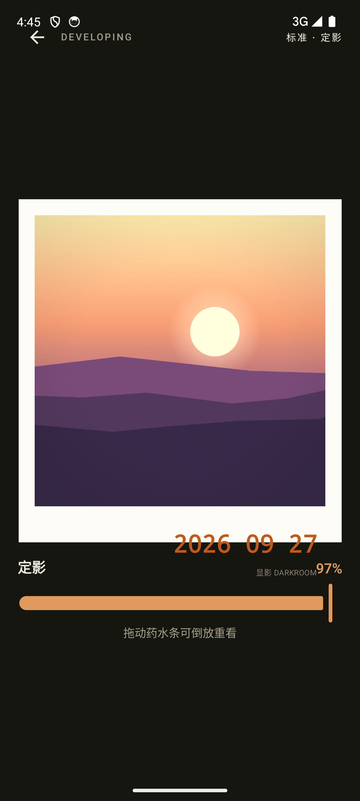
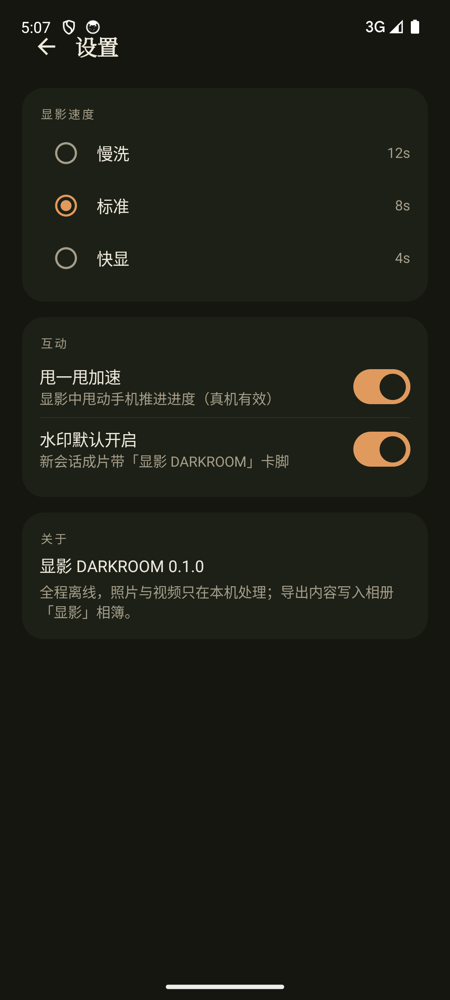
顶行嵌入状态栏触摸死区（四页同源缺陷的首例）：⚙ 中心点点击无效；首屏下半约 800px 空白，设置入口重复且其一失灵。
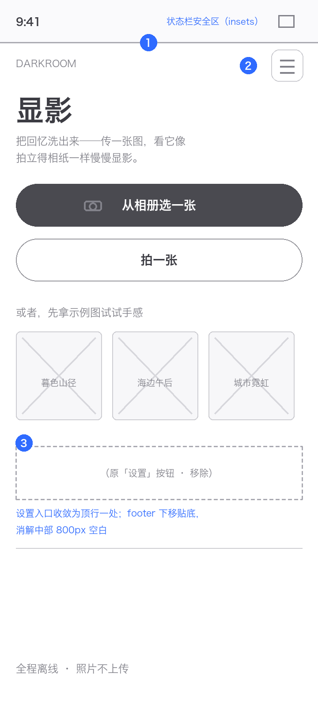
显影台是全 App 主视觉，但白框被容器高度裁掉 130px：日期章与水印冲出卡面、撞上进度读数——每次显影全程可见。
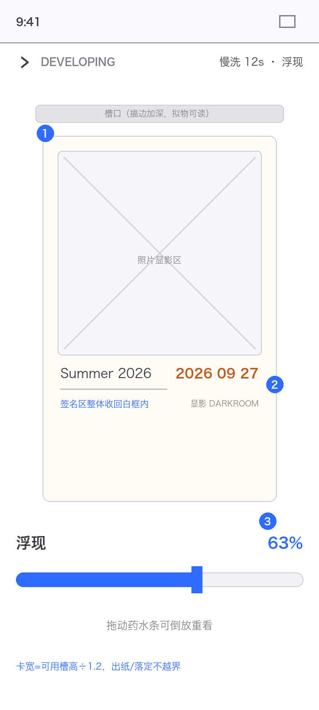
卡面标题与日期章字形直接重叠；存图/存视频贴屏幕底被手势条压住，导出进度条排在首屏之外——导出全程看不到进度。
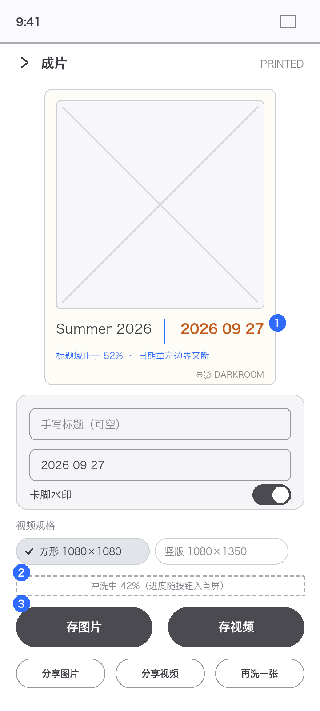
落盘 develop_speed=SLOW 后实测显影仍约 8.8s：clock 初始化固定 STANDARD，prefs 只流进 UI 标签——慢洗/快显两档无效（US-2 失效）。
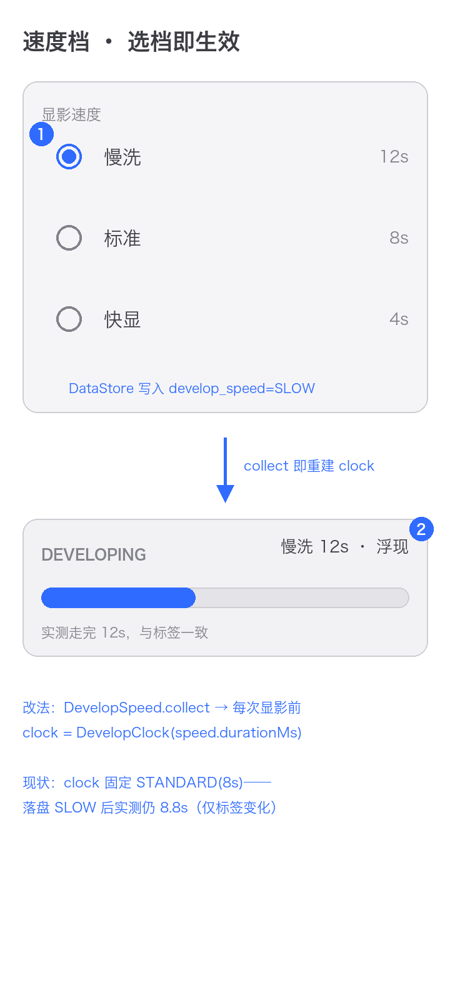
按仓库迭代流程确认后动工；先修共性问题（功能在但用户够不着/猜不到），再修各 App 核心体验。
| 线框 | 内容 | 对应 |
|---|---|---|
| O1 | P0：manifest 补 VIBRATE 权限（已随本次审查落盘）+ 定影触感回归 | D2 |
| O2 | 系统栏 insets 下推全部页头，消除顶行触摸死区 | D1 |
| O3 | CardLayout 按可用高度反解、签名域互斥（W2 溢出与 W3 重叠一次修） | D2 · D3 |
| 线框 | 内容 | 对应 |
|---|---|---|
| O4 | DevelopSpeed.collect 重建 clock，速度档实测对表 12/8/4s | D4 |
| O5 | 成片页 CTA/进度上移入屏，分享与再洗一张收行 | D3 |
| O6 | W1/W4 首屏节奏收口（footer 贴底、去重复设置入口） | D1 |
| 项目 | 结论 |
|---|---|
| 定影触感崩溃（P0） | 复现 3 次堆栈一致：缺 VIBRATE → Haptics.confirm 抛 SecurityException；补权限后全流程回归通过 |
| 三阶段显影 | 潜影 7% / 浮现 54% / 定影 97% 逐帧可辨，线性时钟约 12.5%/s |
| 药水条拖动 | 82% 拖至约 51% 生效且自动续播（seek + 松手续播） |
| 甩一甩 boost | 传感器注入模长 5↔26：t=3.1s 达 74%（自然上限 38.6%），boost ≈ +10%/次 |
| 速度档 | DataStore 落盘 SLOW ✓；实测时长 8.8s ≠ 12s ✗（P1，源码 ViewModel:72） |
| 存图片 | snackbar + 文件：Pictures/显影/显影_2026-09-27.jpg 119KB |
| 存视频 | snackbar + 文件：Movies/显影/显影_2026-09-27.mp4 11.1MB；进度条在首屏外（P1） |
| 分享面板 | 系统 chooser 直出，图片缩略图正常 |
| 三入口 | Photo Picker 零权限选图→显影 ✓；相机 Shutter ✓；示例图 ✓ |
| 设置持久化 | darkroom_prefs.preferences_pb 写入 develop_speed=SLOW / 甩一甩开关 |
| 顶行触摸 | tap y=111 无效 / y=130 生效；StatusBar 窗口 (0,0) fillx128 |
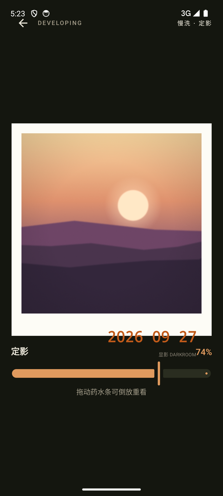
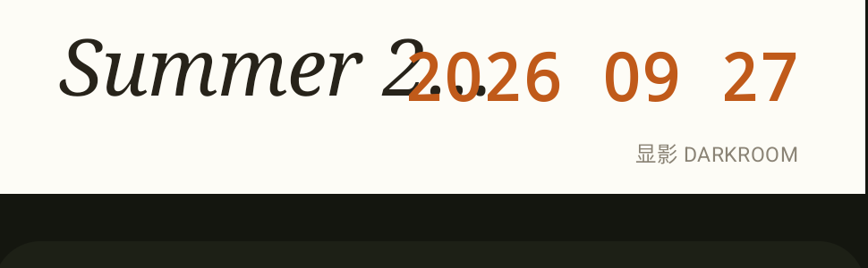
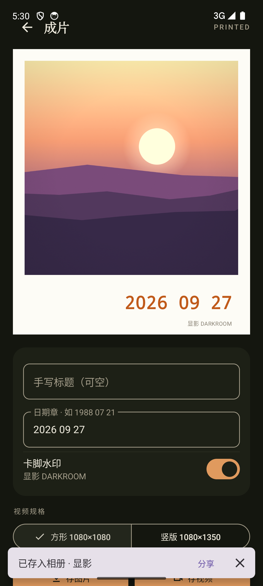
现状截图与改版线框见 assets/ 目录；本报告由 make_report.py 生成，可改数据重出。